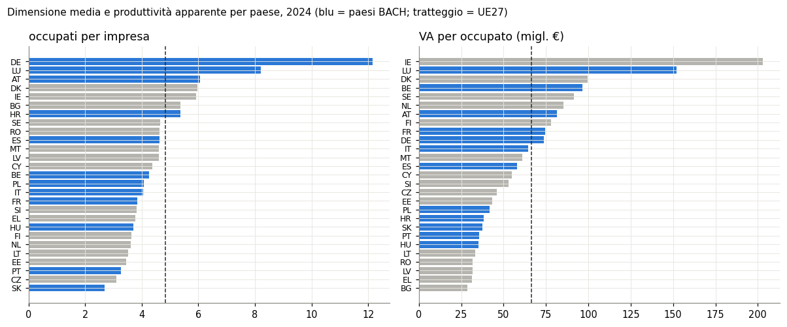
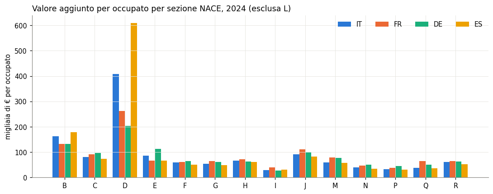

Righe scaricate: 5.256.286; valori numerici: 4.413.331.
Eurostat sbs_ovw_act — analisi esplorativa delle statistiche strutturali sulle imprese
Imprese
Eurostat
Europa
Le statistiche strutturali sulle imprese di Eurostat (sbs_ovw_act): imprese, occupati, fatturato e valore aggiunto per paese e attività economica dal 2021.
Paolo Volterra ![]()
Fonte: Eurostat, Enterprises by detailed NACE Rev. 2 activity and special aggregates (sbs_ovw_act), statistiche strutturali sulle imprese (SBS). Il notebook scarica il dataset completo dal sito Eurostat a ogni esecuzione (nessuna copia locale) e le etichette dalla definizione della struttura (DSD).
Che cosa contiene. Variabili economiche (numero di imprese, occupati, fatturato, valore aggiunto, costo del lavoro, investimenti…) per paese, anno e attività economica NACE Rev. 2 fino alla classe a 4 cifre. Le serie partono dal 2021, primo anno del regolamento europeo sulle statistiche sulle imprese (EBS).
Perché interessa per BACH. Le SBS coprono l’universo delle imprese (società e imprese individuali), BACH le sole società non finanziarie con bilancio depositato. Il rapporto fra le due misura quanto BACH rappresenta del sistema produttivo, paese per paese e settore per settore.
Limiti strutturali per il confronto.
Nessuna dimensione di classe dimensionale (è nel dataset gemello
sbs_sc_ovw) né di forma giuridica.L’aggregato di riferimento
B-S_X_O_S94esclude la pubblica amministrazione (O) e le organizzazioni associative (div. 94) ma include la finanza (K); BACH esclude la finanza.
1. Dimensioni e struttura del dato
Ogni riga è una cella paese × anno × attività × indicatore.
| dimensione | codici presenti | esempi |
|---|---|---|
| geo | 37 | AL, AT, BA, BE, BG, CH, CY, CZ, … |
| nace_r2 | 920 | sezioni, divisioni, gruppi, classi e 31 aggregati speciali |
| indic_sbs | 48 | AVG_EXPN_SAL_BEN_TEUR, AV_HW_EUR, AV_MEUR, AV_MFG_PC, AV_SAL_FTE_TEUR, AV_SAL_TEUR, … |
| year | 4 | 2021-2024 |
In parole semplici: il dataset è ampio in larghezza (quasi un migliaio di attività, 48 indicatori, 37 paesi) ma corto nel tempo: quattro anni.
| livello | 2021 | 2022 | 2023 | 2024 |
|---|---|---|---|---|
| sezione | 99.2 | 98.8 | 99.2 | 96.8 |
| divisione | 91.7 | 90.7 | 90.6 | 89.5 |
| gruppo | 84.1 | 84.3 | 84.3 | 83.8 |
| classe | 82.2 | 82.4 | 82.5 | 81.8 |
| aggregato | 85.1 | 89.5 | 91.0 | 90.4 |
In parole semplici: quota di celle con un valore (il resto è riservato o non disponibile), per livello di dettaglio e anno: più si scende nel dettaglio di attività, più celle mancano.
2. Qualità: riservatezza e note ai valori
Eurostat marca le celle riservate (CONF_STATUS = C, valore assente) e annota i valori con flag (b rottura di serie, e stima, d definizione diversa, u bassa affidabilità).
| flag | celle | significato |
|---|---|---|
| — | 4979261 | nessuna nota |
| b | 157504 | break in time series |
| e | 113624 | estimated |
| be | 3057 | break in time series, estimated |
| u | 1672 | low reliability |
| d | 1139 | definition differs (see metadata) |
| bd | 25 | break in time series, definition differs (see metadata) |
| bu | 4 | break in time series, low reliability |
In parole semplici: quasi tutti i valori sono senza note; le rotture di serie (b) e le stime (e) riguardano poche centinaia di migliaia di celle su oltre cinque milioni.

In parole semplici: quota delle divisioni con valore aggiunto riservato: dal 0,0% (ES) al 38,8% (LU). Per l’Italia è il 3,8%: il dettaglio a due cifre è quasi completo.
3. Il confronto fra paesi
Numero di imprese, dimensione media (occupati per impresa) e produttività apparente del lavoro (valore aggiunto per occupato) sull’aggregato B-S_X_O_S94. I 12 paesi di BACH sono in evidenza.
| paese | BACH | valore aggiunto (mln €) | occupati | imprese | occupati per impresa | VA per occupato (migl. €) |
|---|---|---|---|---|---|---|
| EU27_2020 | 10,924,924.0 | 164,521,796.0 | 33,978,235.0 | 4.8 | 66.4 | |
| FR | sì | 1,564,749.6 | 20,963,399.0 | 5,445,577.0 | 3.8 | 74.6 |
| IT | sì | 1,212,883.2 | 18,833,334.0 | 4,652,416.0 | 4.0 | 64.4 |
| ES | sì | 941,130.7 | 16,246,767.0 | 3,516,793.0 | 4.6 | 57.9 |
| DE | sì | 2,893,992.4 | 39,312,214.0 | 3,236,281.0 | 12.1 | 73.6 |
| PL | sì | 481,358.0 | 11,524,735.0 | 2,821,170.0 | 4.1 | 41.8 |
| NL | 745,454.0 | 8,738,572.0 | 2,424,297.0 | 3.6 | 85.3 | |
| PT | sì | 171,492.7 | 4,802,474.0 | 1,470,937.0 | 3.3 | 35.7 |
| CZ | 195,300.6 | 4,230,633.0 | 1,366,927.0 | 3.1 | 46.2 | |
| RO | 151,721.8 | 4,768,128.0 | 1,030,603.0 | 4.6 | 31.8 | |
| EL | 114,165.0 | 3,632,302.0 | 964,851.0 | 3.8 | 31.4 | |
| BE | sì | 382,460.0 | 3,965,283.0 | 931,405.0 | 4.3 | 96.5 |
| HU | sì | 117,484.7 | 3,345,697.0 | 905,324.0 | 3.7 | 35.1 |
| SE | 372,079.1 | 4,068,276.0 | 873,878.0 | 4.7 | 91.5 | |
| SK | sì | 69,197.8 | 1,840,970.0 | 682,029.0 | 2.7 | 37.6 |
| AT | sì | 309,148.1 | 3,800,813.0 | 628,058.0 | 6.1 | 81.3 |
| FI | 136,354.9 | 1,744,334.0 | 478,708.0 | 3.6 | 78.2 | |
| BG | 64,232.5 | 2,228,125.0 | 415,087.0 | 5.4 | 28.8 | |
| IE | 492,769.2 | 2,428,464.0 | 410,205.0 | 5.9 | 202.9 | |
| DK | 225,674.9 | 2,265,056.0 | 379,306.0 | 6.0 | 99.6 | |
| LT | 43,437.9 | 1,304,173.0 | 371,281.0 | 3.5 | 33.3 | |
| HR | sì | 51,943.5 | 1,352,144.0 | 252,125.0 | 5.4 | 38.4 |
| SI | 41,878.0 | 792,746.0 | 208,078.0 | 3.8 | 52.8 | |
| EE | 23,510.8 | 544,570.0 | 157,547.0 | 3.5 | 43.2 | |
| LV | 22,327.7 | 702,197.0 | 152,706.0 | 4.6 | 31.8 | |
| CY | 22,699.6 | 412,687.0 | 94,379.0 | 4.4 | 55.0 | |
| MT | 16,701.0 | 273,922.0 | 59,496.0 | 4.6 | 61.0 | |
| LU | sì | 60,776.3 | 399,781.0 | 48,771.0 | 8.2 | 152.0 |
In parole semplici: anno 2024. L’Italia ha 4.652.416 imprese (2ª nell’UE per numero), ma con 4,0 occupati per impresa contro 4,8 della media UE: molte imprese, piccole.

In parole semplici: a sinistra quanti occupati ha in media un’impresa, a destra quanto valore aggiunto produce ogni occupato. Fra i paesi UE la correlazione di rango fra le due misure è 0,39; i paesi BACH (in blu) stanno sia in testa sia in coda.
4. L’Italia per settore, a confronto con Francia, Germania e Spagna
Peso delle sezioni NACE su imprese, occupati e valore aggiunto, e produttività per sezione.
| NACE | sezione | IT | FR | DE | ES |
|---|---|---|---|---|---|
| B | Mining and quarrying | 0.3 | 0.1 | 0.2 | 0.4 |
| C | Manufacturing | 29.1 | 20.9 | 29.0 | 19.7 |
| D | Electricity, gas, steam and air conditioning | 3.8 | 4.4 | 3.5 | 3.4 |
| E | Water supply; sewerage, waste management and | 1.8 | 1.2 | 1.3 | 1.5 |
| F | Construction | 8.8 | 8.9 | 6.4 | 8.0 |
| G | Wholesale and retail trade; repair of motor v | 16.9 | 17.2 | 14.9 | 19.3 |
| H | Transportation and storage | 7.2 | 7.5 | 5.2 | 7.6 |
| I | Accommodation and food service activities | 4.6 | 4.0 | 2.5 | 6.6 |
| J | Information and communication | 5.5 | 8.4 | 5.9 | 6.8 |
| L | Real estate activities | 2.2 | 3.0 | 3.3 | 2.7 |
| M | Professional, scientific and technical activi | 8.4 | 8.9 | 8.0 | 8.3 |
| N | Administrative and support service activities | 5.7 | 7.4 | 6.5 | 6.9 |
| P | Education | 0.4 | 0.8 | 0.8 | 2.0 |
| Q | Human health and social work activities | 3.9 | 6.0 | 11.3 | 4.1 |
| R | Arts, entertainment and recreation | 1.3 | 1.2 | 1.2 | 2.5 |
In parole semplici: quota di ogni sezione sul valore aggiunto delle imprese, 2024. La manifattura (C) pesa 29,1% in Italia, 29,0% in Germania, 20,9% in Francia, 19,7% in Spagna; la sezione S manca perché Eurostat pubblica solo le divisioni S95 e S96 (la S94 è fuori campo).

In parole semplici: quanto valore aggiunto produce un occupato in ciascun settore. In Italia i valori più alti sono in D (409 mila €) e B (162 mila €), i più bassi in I (29 mila €). L’immobiliare (L) è escluso perché il valore aggiunto per occupato vi riflette soprattutto i canoni, non il lavoro.
| NACE | sezione | imprese % | occupati % | valore aggiunto % (nominale) |
|---|---|---|---|---|
| B | Mining and quarrying | 2.3 | 3.9 | 5.2 |
| C | Manufacturing | -3.2 | 3.9 | 15.7 |
| D | Electricity, gas, steam and air conditioning | 1.9 | 6.9 | 27.4 |
| E | Water supply; sewerage, waste management and | -10.3 | 8.2 | 11.0 |
| F | Construction | 4.1 | 11.8 | 38.1 |
| G | Wholesale and retail trade; repair of motor v | -6.2 | 1.0 | 12.9 |
| H | Transportation and storage | 1.9 | 3.9 | 30.8 |
| I | Accommodation and food service activities | 2.3 | 19.9 | 86.5 |
| J | Information and communication | 6.9 | 6.8 | 11.6 |
| L | Real estate activities | 1.1 | -0.9 | 22.5 |
| M | Professional, scientific and technical activi | 10.8 | 11.2 | 30.7 |
| N | Administrative and support service activities | 19.3 | 8.1 | 23.0 |
| P | Education | 44.4 | 23.5 | 46.2 |
| Q | Human health and social work activities | 11.8 | 11.9 | 16.6 |
| R | Arts, entertainment and recreation | 22.8 | 31.5 | 67.3 |
In parole semplici: variazione 2021-2024 in Italia. Il valore aggiunto è a prezzi correnti: una parte della crescita è inflazione.
5. Coerenza interna: sezioni contro aggregato
Si verifica se la somma delle sezioni ricostruisce l’aggregato B-S_X_O_S94. Poiché la sezione S non è pubblicata, la si sostituisce con S95 + S96.
| paese | scarto EMP_NR % | scarto ENT_NR % |
|---|---|---|
| IE | -0.67 | 0.00 |
| AT | 0.00 | 0.00 |
| BG | 0.00 | 0.00 |
| BE | 0.00 | 0.00 |
| CZ | -0.00 | 0.00 |
| DE | 0.00 | 0.00 |
| DK | 0.00 | 0.00 |
| CY | 0.00 | 0.00 |
| EE | 0.00 | 0.00 |
| EL | 0.00 | 0.00 |
| FI | -0.00 | 0.00 |
| ES | 0.00 | 0.00 |
| FR | 0.00 | 0.00 |
| HR | 0.00 | 0.00 |
| HU | 0.00 | 0.00 |
| IT | 0.00 | 0.00 |
| LT | 0.00 | 0.00 |
| LU | 0.00 | 0.00 |
| LV | 0.00 | 0.00 |
| MT | 0.00 | 0.00 |
| NL | 0.00 | 0.00 |
| PL | 0.00 | 0.00 |
| PT | 0.00 | 0.00 |
| RO | 0.00 | 0.00 |
| SE | 0.00 | 0.00 |
| SI | 0.00 | 0.00 |
| SK | 0.00 | 0.00 |
In parole semplici: per ogni paese, di quanto la somma delle sezioni (con K e con S95+S96 al posto di S) differisce dall’aggregato, 2024. Zero = aggregato ricostruito esattamente; fanno eccezione IE, dove mancano nella somma sezioni riservate.
6. Ponte con BACH: quanto copre BACH delle imprese europee
Per la manifattura (C), confronto fra BACH (società non finanziarie, campione variabile, tutte le dimensioni) e SBS (tutte le imprese). Il numero di occupati di BACH (employees) si confronta con i dipendenti SBS (SAL_NR); importi in migliaia di € in BACH, milioni in SBS.
| paese | imprese % | dipendenti % | fatturato % | valore aggiunto % | copertura fatturato dichiarata da BACH % |
|---|---|---|---|---|---|
| AT | 32.7 | 101.7 | 95.4 | 104.5 | nan |
| BE | 47.9 | 91.6 | 86.5 | 91.4 | nan |
| DE | 5.8 | nan | 47.9 | 39.9 | 64.0 |
| ES | 34.8 | 58.6 | 61.8 | 58.7 | nan |
| FR | 15.3 | 78.4 | 90.9 | 80.1 | nan |
| HR | 65.0 | 93.8 | 105.3 | 86.0 | 24.2 |
| HU | 60.4 | 97.9 | 97.8 | 88.4 | 100.0 |
| IT | 33.1 | 87.1 | 91.1 | 83.6 | 100.0 |
| LU | 85.5 | nan | 72.9 | 57.0 | 90.1 |
| PL | 5.7 | 75.1 | 87.5 | 78.6 | nan |
| PT | 64.6 | 100.4 | 100.5 | 98.5 | 100.0 |
| SK | 5.3 | 22.4 | 17.1 | 18.4 | 18.2 |
In parole semplici: 2022, manifattura. Per ogni paese, quota delle imprese, dei dipendenti, del fatturato e del valore aggiunto SBS che si ritrova in BACH. Le imprese sono poche in proporzione (BACH esclude le imprese individuali e, in alcuni paesi, le società senza bilancio completo), mentre fatturato e valore aggiunto sono coperti molto di più dove la rilevazione è esaustiva. Copertura del valore aggiunto sotto il 50% in DE, SK: lì BACH è un campione, come dichiarato dalla copertura che BACH stessa pubblica. Rapporti appena sopra 100 (AT, HR, PT) indicano differenze di definizione fra le fonti (unità legale contro impresa statistica, classificazione settoriale), non errori.
Eurostat, Enterprises by detailed NACE Rev. 2 activity and special aggregates (sbs_ovw_act), Structural business statistics. Scaricato da ec.europa.eu/eurostat. — BACH database: ECCBSO, Oesterreichische Nationalbank, National Bank of Belgium, Deutsche Bundesbank, Banco de España, Banque de France, Hrvatska Narodna Banka, Magyar Nemzeti Bank, Centrale dei Bilanci - Cerved srl / Banca d’Italia, Statec Luxembourg, Narodowy Bank Polski (calculations of Narodowy Bank Polski on the basis of the data from the Statistics Poland), Banco de Portugal, National Bank of Slovakia (calculations based on data from the Ministry of Finance). Rilascio BACH 20260914.
Nota metodologica
Questo documento nasce dall’interazione di tre componenti. L’autore definisce le domande, esercita il giudizio critico e assume la responsabilità scientifica ed editoriale del risultato. Strumenti di intelligenza artificiale generativa sono impiegati a supporto della ricerca bibliografica, della lettura, della sintesi, della riorganizzazione argomentativa e della revisione del testo. Un’infrastruttura open source sviluppata dall’autore automatizza il reperimento, l’armonizzazione e il controllo dei dati dalle fonti statistiche ufficiali, e mantiene l’elaborazione documentata e riproducibile.
Le fonti sono pubblicamente accessibili e citate con la loro denominazione ufficiale; l’analisi è pertanto integralmente auditabile e replicabile da terzi a partire da esse. Le tabelle e i grafici sono elaborazioni dell’autore: calcoli, aggregazioni, trasformazioni e scelte di rappresentazione sono attribuibili all’autore e non agli enti produttori dei dati.
La responsabilità per le fonti utilizzate, le analisi condotte, le elaborazioni effettuate, le interpretazioni proposte e le conclusioni formulate resta interamente in capo all’autore. L’intelligenza artificiale è stata impiegata come ambiente di supporto cognitivo ed editoriale, non come fonte primaria, autore autonomo o sostituto del giudizio critico.